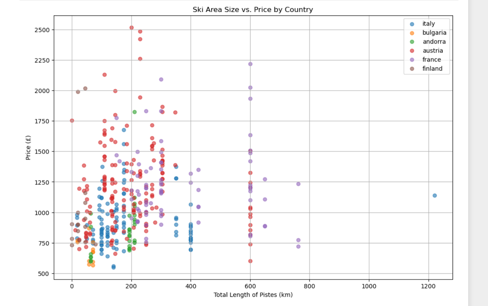
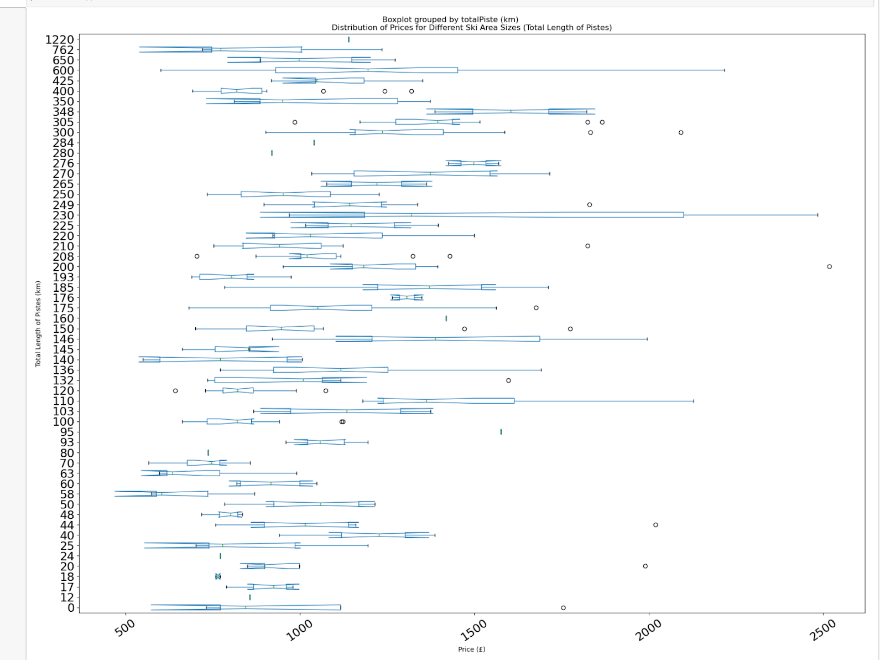

If you are going on vacation, which hotels give best price for size? Total length of pistes (in km): Is there a correlation between the size of the ski area and the price?
My Data
Measure: Mean of the price and piste Value: price(£):1095.027027($1192.57) totalPiste(km): 220.270270
What does this tell me?: This is the average mean between the price and piste. This shows the average price and average Piste
----------------------------------------------------------------------------------------------------------------------------------------------------------------
Measure: Person Correlation Coefficient between Ski Area Size and Price:
Value: 0.16
What does this tell me?: Since this number is very low it means that the correlation is very low, if the number was higher the .4-5 it would have a correlation
----------------------------------------------------------------------------------------------------------------------------------------------------------------
Measure: Median for price
Value: The median price is: £1021.00($1111.95)
What does this tell me?: The median price for ski resorts
----------------------------------------------------------------------------------------------------------------------------------------------------------------
My Visualizations

The chart shows the price and piste for every ski resort on the data frame. This shows what each resorts price to piste is.

This is slightly different because this shows the country names with each scatter point.

This chart uses box plots, for each box represents the interquartile range (IQR) of prices for a specific ski area size, allowing you to compare the price distributions for different ski area sizes.
Answer:
Based on the provided Pearson correlation coefficient of 0.16 between ski area size and price, which is less than 0.5 (our threshold for significance), the conclusion would be:
No, there is no significant correlation between ski area size and price.
A correlation coefficient of 0.16 suggests a weak positive correlation, but it does not reach the threshold considered significant. Therefore, based on this data, the size of the ski area (measured by the total length of pistes) does not have a significant impact on the price of ski resorts.